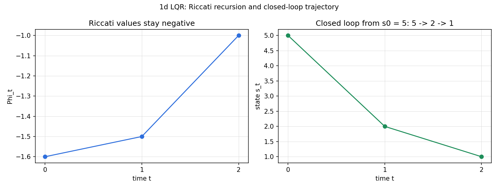
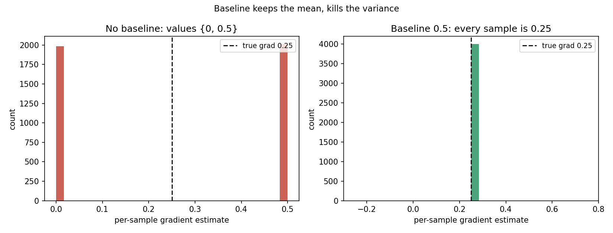

Lesson 16 · Control, policy optimization
Lesson 16, control and policy optimization
Unit: cs229-U16. Leaf concepts: cs229-U16-C01 to C12 (finite-horizon MDP, LQR quadratic objective, dynamics linearization, Riccati intuition/derivation, DDP, LQG/noise, REINFORCE log derivative, baselines, PPO ratios, clipping, on/off-policy assumptions, stability). Date: 2026-10-06. Baseline: October 6, 2026.
Source mapping
Chapter 20, LQR, DDP and LQG (SRC-01, PDF pages 245-257) was read in full on 2026-10-06: finite-horizon MDPs and the backward recursion (20.1), LQR with the discrete Riccati equations (20.2), linearization of dynamics (20.3.1), differential dynamic programming (20.3.2), and LQG with the Kalman filter predict/update steps (20.4). Chapter 21, Policy gradient and its variants (SRC-01, PDF pages 259-265) was read in full on 2026-10-06: REINFORCE with the score-function derivation (21.1), the zero-mean score identity and baselines with Algorithm 7 (21.1), and PPO with the likelihood ratio, the local surrogate, and clipping (21.2). Lecture 17 transcript covers policy gradient and PPO (SRC-02), header inspected, content not read in depth. Two boundaries: (a) the notes’ printed LQR gain formula omits a leading minus sign (verified numerically in SL-04, recorded as a source erratum in errors.md). The lesson teaches the corrected formula. (b) GAE is named but not derived in the notes (21.2). It is stated as background only. Leaf rows carry SOURCE ATTRIBUTION PENDING until the RUN 6 pass.
Scope and objectives
Scope: the control half of the course. First the planning half: finite-horizon MDPs solved by backward dynamic programming, the LQR special case with its closed-form Riccati solution, linearization and DDP for nonlinear systems, and LQG for partial observation. Then the learning half: REINFORCE, baselines, and PPO.
Objectives: the learner can (1) write the finite-horizon Bellman recursion and explain why the optimal policy is non-stationary, (2) state the LQR assumptions and run the Riccati recursion on a 1d toy, (3) linearize dynamics around a nominal point, (4) state the DDP loop, (5) run one Kalman predict/update step by hand, (6) derive the REINFORCE gradient, (7) explain why a baseline keeps the estimator unbiased, and (8) compute the PPO clipped surrogate on numbers.
Dependencies
Prerequisites: P04, P05, P09, P17 (shared bridges, linked). Unit U15 (MDP, Bellman, value iteration).
Not-yet-understood list:
- Why the LQR policy ignores the noise (remediated in SL-04).
- Why PPO reuses old data but stays “almost on-policy” (remediated in SL-11).
SL-01: Finite-horizon MDPs
Covers C01 (finite-horizon MDP).
Source anchor
SRC-01 section 20.1, pages 245-248. Chapter 19 used an infinite horizon with discount gamma. Here the horizon is finite: the tuple is (S, A, P_sa, T, R) with T > 0, for example T = 100. The payoff is the finite sum
R(s_0, a_0) + R(s_1, a_1) + … + R(s_T, a_T).
No discount factor. Gamma existed to keep the infinite sum finite. A finite sum needs no discount.
Non-stationary policies
The optimal policy now depends on time: pi^(t): S -> A. The notes’ example: a grid with a +1 goal and a +10 goal. Early on, aim for +10. If the dynamics push you near +1 with few steps left, switch to +1. The time left is part of the decision. Formally the notes allow time-dependent dynamics P^(t)_{sa} and rewards R^(t): adding time to the state recovers the stationary form.
Backward recursion
The value at time t under pi:
V^pi_t(s) = E[R^(t)(s_t, a_t) + … + R^(T)(s_T, a_T) | s_t = s, pi].
The optimal value V*_t satisfies:
V*_T(s) = max_a R^(T)(s, a). (20.1)
Vt(s) = max_a [R^(t)(s, a) + E{s’~P^(t)_{sa}}[V_{t+1}(s’)]]. (20.2)
Solve backward: compute V_T, then t = T-1 down to 0. The notes call this dynamic programming after Bellman. Value iteration is the special case without time tracking: T sweeps of value iteration give a gamma^T approximation of V.
Computed example
T = 1, two states {A, B}, R^(0)(A, move) = 0, R^(1)(B) = 10, R^(1)(A) = 0. Then V_1(A) = 0, V_1(B) = 10. V*_0(A) = max(0 + 10, 0 + 0) = 10 with action move. The script checks this recursion.
Correctness checks
- V*_T must equal the max immediate reward. If the recursion gives anything else at t = T, the base case is wrong.
- The policy pi^(t) must be stored per time step. Using pi^(0) at t = T-1 is a time-index bug.
Nearest alternative
Infinite-horizon discounted MDP: one stationary policy, needs gamma < 1.
Failure case
Running the finite-horizon recursion with a discount gamma < 1 smuggled in: the early steps get down-weighted for no reason and the policy becomes myopic near t = 0.
SL-02: The LQR objective
Covers C02 (LQR quadratic objective).
Source anchor
SRC-01 section 20.2, pages 249-251. LQR is the tractable special case of the finite-horizon MDP: continuous states and actions S = R^d, A = R^d, linear dynamics with Gaussian noise
s_{t+1} = A_t s_t + B_t a_t + w_t, w_t ~ N(0, Sigma_t),
and quadratic rewards
R^(t)(s_t, a_t) = -s_t^T U_t s_t - a_t^T W_t a_t,
with U_t, W_t positive definite, so rewards are always negative (costs). The notes’ example: U = W = I gives R = -||s||^2 - ||a||^2. A car that wants to stay in the lane center (small ||s||) with smooth steering (small ||a||).
Why this shape
Linear dynamics plus quadratic costs keep the value function quadratic at every time step. That closure is the whole trick: it reduces the backward recursion to matrix algebra.
The two steps of LQR
Step 1 (if needed): estimate A, B, Sigma from data. Collect transitions with any policy, fit s_{t+1} = A s_t + B a_t by least squares (as in 19.4.2), learn Sigma as in GDA.
Step 2: dynamic programming on the known model. That is SL-04.
Correctness checks
- U_t and W_t must be positive definite. Check eigenvalues > 0. A zero eigenvalue means some direction is free: the “cost” is not a cost there.
- State and action dimensions must match the A_t, B_t shapes: A_t in R^{d x d}, B_t in R^{d x d} in the notes’ square formulation.
Nearest alternative
Finite-horizon tabular MDP: exact, but needs discrete states.
Failure case
A reward with a positive eigenvalue in U: the “optimal” policy drives the state to infinity along that direction. The Riccati recursion still runs. The answer is garbage.
SL-03: Linearization
Covers C03 (dynamics linearization).
Source anchor
SRC-01 section 20.3.1, pages 252-253. Real dynamics are nonlinear: the inverted pendulum transition s_{t+1} = F(s_t, a_t) has cosines of the angle. LQR needs linear dynamics. The fix: linearize around a nominal point.
The Taylor step
Suppose the system spends most time near sbar_t with actions near abar_t (true near an upright pendulum). First-order Taylor:
s_{t+1} ~= F(sbar_t, abar_t) + grad_s F (s_t - sbar_t) + grad_a F (a_t - abar_t). (20.3)
Rewrite as s_{t+1} ~= A s_t + B a_t + kappa with A = grad_s F, B = grad_a F, kappa = F(sbar, abar) - A sbar - B abar. The constant kappa is absorbed by adding a dimension of ones to the state, the same trick as the bias term in linear regression.
Computed example
Scalar dynamics s_{t+1} = s_t^2 + a_t, nominal point sbar = 1, abar = 0. F(1, 0) = 1. dF/ds = 2s = 2 at sbar. dF/da = 1. Linear model: s_{t+1} ~= 1 + 2(s_t - 1) + a_t = 2 s_t + a_t - 1. At s_t = 1.1, a_t = 0: true 1.21, linear 1.2. Error 0.01: second order in the deviation. The script checks this.
Correctness checks
- The linearization is only valid near (sbar, abar). Check the deviation ||s_t - sbar_t|| stays small along the closed loop.
- kappa must be absorbed or kept. Dropping it silently shifts the equilibrium.
Nearest alternative
Global nonlinear planning (for example DDP in SL-05 iterates local linearizations instead of trusting one).
Failure case
Linearizing a pendulum at the downward equilibrium and asking LQR to drive it up: the linear model is valid near down, the task lives far from down. The controller stabilizes the wrong equilibrium.
SL-04: The Riccati recursion
Covers C04 (Riccati intuition and derivation).
Source anchor
SRC-01 section 20.2, pages 250-252.
The quadratic closure
Fact 1: if V{t+1}(s) = s^T Phi{t+1} s + Psi_{t+1}, then V_t is also quadratic: V_t(s) = s^T Phi_t s + Psi_t. Base case: V_T(s) = -s^T U_T s, so Phi_T = -U_T, Psi_T = 0.
Fact 2: the optimal policy is linear in the state. Plug the quadratic form into (20.2):
V*t(s_t) = max{a_t} [-s_t^T U_t s_t - a_t^T W_t a_t + E[(A_t s_t + B_t a_t + w_t)^T Phi_{t+1} (A_t s_t + B_t a_t + w_t)] + Psi_{t+1}].
The bracket is quadratic in a_t. First-order condition:
-2 W_t a_t + 2 B_t^T Phi_{t+1} (A_t s_t + B_t a_t) = 0,
(B_t^T Phi_{t+1} B_t - W_t) a_t = -B_t^T Phi_{t+1} A_t s_t,
a*t = -(B_t^T Phi{t+1} B_t - W_t)^{-1} B_t^T Phi_{t+1} A_t s_t =: L_t s_t.
Source erratum: the notes print this gain without the leading minus sign. The derivation above and the numeric check below both require it. With Phi negative definite the printed formula points the wrong way (it pushes the state away from zero). Recorded in errors.md.
Substituting a*_t back gives the discrete Riccati equations:
Phi_t = A_t^T (Phi_{t+1} - Phi_{t+1} B_t (B_t^T Phi_{t+1} B_t - W_t)^{-1} B_t^T Phi_{t+1}) A_t - U_t,
Psi_t = -tr(Sigma_t Phi_{t+1}) + Psi_{t+1}.
Fact 3: noise independence
Phi_t depends on neither Psi nor Sigma_t. Since L_t uses only A_t, B_t, Phi_{t+1}, the optimal policy is independent of the noise. The noise enters only Psi_t, hence only the value, not the policy. The notes use the identity E[w^T Phi w] = tr(Sigma Phi) for w ~ N(0, Sigma).
Intuition
Phi_t is the cost-to-go matrix: how much future cost each state direction carries. The recursion propagates costs backward. L_t trades control effort (W_t) against state cost (Phi_{t+1}) through the control authority B_t.
Computed example
1d, T = 2, A = B = 1, U = W = 1, Sigma = 0. Phi_2 = -1. Phi_1 = (-1 - (-1)(-1/2)(-1)) - 1 = -1.5. L_1 = -(-2)^{-1} (-1) = -0.5. Phi_0 = -1.6, L_0 = -0.6. Policy: a_0 = -0.6 s_0, a_1 = -0.5 s_1, a*_2 = 0. From s_0 = 5: s_1 = 2, s_2 = 1. The script verifies the Riccati values, the gains, and the trajectory, and checks that the notes’ unsigned formula gives +0.5 (wrong direction).
Correctness checks
- Phi_t must stay negative semidefinite. A positive eigenvalue means the recursion diverged or a sign flipped.
- The closed-loop matrix A + B L_t should be stable (eigenvalues inside the unit circle) when a stabilizing policy exists.
Nearest alternative
Solve the finite-horizon problem by generic nonlinear programming over the action sequence. No structure exploited, much slower.
Failure case
Applying the printed unsigned gain: the controller amplifies deviations and the closed loop is unstable. The Phi negative-semidefinite check catches the inconsistency before deployment.
SL-05: DDP
Covers C05 (DDP).
Source anchor
SRC-01 section 20.3.2, pages 253-255. Linearization (SL-03) handles staying near one state. DDP handles following a trajectory, for example a rocket flight path.
The loop
Step 1: build a nominal trajectory s_0, a_0 -> s_1, a_1 -> … with a naive controller approximating the desired path.
Step 2: linearize the dynamics around each trajectory point (SL-03), giving time-varying A_t, B_t. Expand the reward to second order around each point (Hessians H_ss, H_sa, H_aa), rewritten in the -s^T U s - a^T W a form by augmenting the state with ones.
Step 3: run LQR on this time-varying linear-quadratic problem to get an improved policy pi_t.
Step 4: roll out the new policy on the true nonlinear dynamics F (not the linearization) to get a new nominal trajectory. Repeat from step 2 until a stopping criterion.
Why it works
Each iteration solves exactly the problem the linearization describes. If the new trajectory stays near the old one, the linearization stays valid and the policy improves. The notes flag the failure mode: the LQR solution can deviate far from the linearized trajectory. Reward shaping keeps the iterates close.
Correctness checks
- The rollout in step 4 must use the true F. Rolling out the linear model proves nothing.
- Track the deviation between successive nominal trajectories. Growing deviation means the linearization is stale.
Nearest alternative
Single linearization about a fixed point (SL-03): simpler, only valid near that point.
Failure case
The naive controller in step 1 is so bad that the nominal trajectory leaves the region where any linearization is valid. DDP iterates on fiction. A feasible warm start is not optional.
SL-06: LQG and the Kalman filter
Covers C06 (LQG/noise).
Source anchor
SRC-01 section 20.4, pages 255-257. So far the state was observed. Real sensors give observations: a camera image is not the full state. A POMDP adds an observation variable o_t with o_t | s_t ~ O(o|s). The policy maps belief states (distributions over s) to actions.
The LQG setup
y_t = C s_t + v_t, v_t ~ N(0, Sigma_y) s_{t+1} = A s_t + B a_t + w_t, w_t ~ N(0, Sigma_s).
Linear Gaussian observations and dynamics, quadratic reward on the true state and action. Gaussian beliefs stay Gaussian.
The separation strategy
Step 1: maintain the belief s_t | y_1..y_t ~ N(s_{t|t}, Sigma_{t|t}) with the Kalman filter. Step 2: use the mean s_{t|t} as the state estimate. Step 3: act with a_t = L_t s_{t|t}, L_t from plain LQR. Why this works: the estimate is a noisy version of the state, and LQR’s policy is noise-independent (Fact 3, SL-04).
The Kalman filter
Predict: from s_{t|t}, Sigma_{t|t},
s_{t+1|t} = A s_{t|t}, Sigma_{t+1|t} = A Sigma_{t|t} A^T + Sigma_s.
Update: with the new observation y_{t+1},
K_t = Sigma_{t+1|t} C^T (C Sigma_{t+1|t} C^T + Sigma_y)^{-1}, s_{t+1|t+1} = s_{t+1|t} + K_t (y_{t+1} - C s_{t+1|t}), Sigma_{t+1|t+1} = Sigma_{t+1|t} - K_t C Sigma_{t+1|t}.
K_t is the Kalman gain. The naive marginal computation would invert t x t matrices at O(t^4) total. The filter updates in constant time per step. The notes note the filter flew on the Apollo Lunar Module.
Computed example
1d, A = C = 1, Sigma_s = Sigma_y = 1. Prior s_{0|0} = 0, Sigma_{0|0} = 1. Predict: s_{1|0} = 0, Sigma_{1|0} = 2. Observe y_1 = 1.5. K = 2 / 3. Update: s_{1|1} = 1.0, Sigma_{1|1} = 2/3. The estimate moves two thirds of the way to the observation, and the variance drops from 2 to 0.67. The script checks these numbers.
Correctness checks
- Sigma_{t|t} must stay positive definite and should shrink when observations are informative.
- The innovation y - C s_{t+1|t} should be zero-mean. A persistent bias means the model (A, C) is wrong.
Nearest alternative
Full POMDP planning over belief states: exact, intractable in general. LQG is the tractable Gaussian special case.
Failure case
Sigma_y underestimated: the filter trusts noisy sensors, K_t near 1, the estimate chatters with sensor noise and the LQR controller chases it. Calibrate the noise or estimate it from data.
SL-07: REINFORCE
Covers C07 (REINFORCE log derivative).
Source anchor
SRC-01 section 21.1, pages 259-261. REINFORCE is model-free: no value function, no Q function, no learned model. It needs only samples from P_sa and queries of R(s, a). The policy is randomized: pi_theta(a|s) is the probability of action a in state s. Finite horizon T. The objective:
eta(theta) = E[sum_{t=0}^{T-1} gamma^t R(s_t, a_t)]. (21.1)
The log-derivative trick
Write a trajectory tau = (s_0, a_0, …, s_T) with distribution P_theta and payoff f(tau) = sum gamma^t R(s_t, a_t). Then
grad_theta E_{tau~P_theta}[f(tau)] = E_{tau~P_theta}[(grad_theta log P_theta(tau)) f(tau)]. (21.3)
The steps: move the gradient inside the integral, use grad P = P grad log P, and note f does not depend on theta. Compare with the VAE notes: there the reparameterization trick solved the same “gradient through the expectation” problem, but it needs grad f, which we do not have.
Now expand log P_theta(tau):
log P_theta(tau) = log mu(s_0) + sum_t log pi_theta(a_t|s_t) + sum_t log P_{s_t a_t}(s_{t+1}). (21.7)
The gradient kills every term that does not depend on theta: the unknown transitions vanish. What remains:
grad_theta eta(theta) = E[(sum_t grad_theta log pi_theta(a_t|s_t)) f(tau)]. (21.8)
Sample n trajectories, average, and take a gradient ascent step. The estimate is unbiased.
Interpretation
grad log P_theta(tau) is the score: the direction that increases the log-probability of the sampled trajectory. f(tau) weights it. Rewarding trajectories get their direction reinforced strongly. Poor trajectories get a small weight. The update pushes probability mass toward actions that appeared in good trajectories.
Computed example
Two-armed bandit, T = 1. pi_theta(a_1) = sigmoid(theta), theta = 0, so pi = [0.5, 0.5]. Rewards: R(a_1) = 1, R(a_2) = 0. True objective eta = sigmoid(theta), true gradient at 0: 0.25. Sample both actions once. For a_1: grad log pi = 1 - 0.5 = 0.5, weight 1, contribution 0.5. For a_2: grad log pi = -0.5, weight 0, contribution 0. Estimate: (0.5 + 0) / 2 = 0.25. Matches the true gradient. The script verifies this and the unbiasedness over many samples.
Correctness checks
- The estimator must average over trajectories from the current pi_theta. Stale trajectories bias it (this is the on-policy requirement of SL-11).
- grad log pi must be computed by autodiff on the policy only. Any term with the unknown dynamics is a bug.
Nearest alternative
Value-based planning with a learned model (U15): needs the model, gets lower variance.
Failure case
T large and rewards sparse: f(tau) is zero for almost every sampled trajectory and the gradient estimate is pure noise. Baselines (SL-08) help. Credit assignment needs more.
SL-08: Baselines
Covers C08 (baselines).
Source anchor
SRC-01 section 21.1, pages 262-264. The REINFORCE estimator has high variance. The fix starts from an identity. Take f(tau) = 1 (constant reward). Then eta is constant, its gradient is zero, so (21.8) gives
E[sum_t grad_theta log pi_theta(a_t|s_t)] = 0. (21.9)
Per time step: E_{a~pi(.|s)}[grad log pi(a|s)] = 0. Consequence 1: past rewards (j < t) can be dropped from the weight of step t, giving the reward-to-go form (21.10). Consequence 2: for any B(s_t) that depends only on the state,
E[grad log pi(a_t|s_t) B(s_t)] = 0.
So subtracting a baseline keeps the estimator unbiased:
grad eta = sum_t E[grad log pi(a_t|s_t) (R_{>=t} - B(s_t))], (21.11)
where R_{>=t} = sum_{j>=t} gamma^{j-t} R(s_j, a_j). The mean is unchanged. The variance can drop a lot.
The notes’ variance example
Fix t. Suppose the future reward is 1000 + 1 or 1000 - 2 with equal probability, and grad log pi takes values z and -z. Without a baseline the estimator takes values 1001 z and -998 z: huge spread, same mean. With baseline 1000 it takes values z and 2z. Same expectation, far smaller variance. The near-optimal baseline is the expected future payoff E[R_{>=t} | s_t], which is essentially V^{pi_theta}(s_t). Its exact value does not matter for the mean, only for the variance, so a crude fit suffices.
Algorithm 7
Vanilla policy gradient with baseline: collect trajectories, fit B by least squares sum_tau sum_t (R_{>=t} - B(s_t))^2 (21.12), then update theta with sum_tau sum_t grad log pi(a_t|s_t) (R_{>=t} - B(s_t)) (21.13). The notes remark that dropping the gamma^t factor in (21.13) deviates from (21.11) but works well in practice.
Computed example
Bandit toy from SL-07, baseline B = 0.5 (the mean reward). Per-sample estimates: a_1 gives 0.5 * (1 - 0.5) = 0.25, a_2 gives -0.5 * (0 - 0.5) = 0.25. Both samples give 0.25: variance zero, mean still 0.25. The script verifies the variance drop from 0.0625 to 0.
Correctness checks
- The baseline may depend on s_t but never on a_t. An action-dependent baseline biases the gradient.
- Fit the baseline on the same batch before the policy update. A stale baseline is still unbiased but helps less.
Nearest alternative
No baseline: unbiased, often too noisy to learn.
Failure case
Baseline fit on too little data: B(s_t) memorizes the batch noise and the “variance reduction” adds variance. Regularize the fit or use a simple baseline (the batch mean reward).
SL-09: PPO likelihood ratios
Covers C09 (PPO ratios).
Source anchor
SRC-01 section 21.2, pages 264-265. Vanilla policy gradient is on-policy: each batch of trajectories supports exactly one gradient update. Sampling is expensive, so PPO reuses trajectories from a recent old policy for several updates.
The local surrogate
Let theta_old generate the sampled trajectories. For a sampled pair (s_t, a_t) the likelihood ratio
r_t(theta) = pi_theta(a_t|s_t) / pi_{theta_old}(a_t|s_t) (21.15)
corrects the action distribution from old to new. The importance-weighted local surrogate:
J_IS(theta) = sum_t E_{s~d_old, a~pi_old}[r_t(theta) R_{>=t}]. (21.16)
Read it carefully: the ratio fixes the action expectation, but the state distribution d_old and the rollouts still come from the old policy. It is a local approximation, valid near theta_old.
Computed example
Old policy pi_old(a_1) = 0.5, new policy pi(a_1) = 0.6 after one update. Sampled action a_1: r = 0.6 / 0.5 = 1.2. With R_{>=t} = 1, the surrogate contribution is 1.2: the update is credited as if the good action were 1.2x more likely under the new policy. The script checks this arithmetic.
Correctness checks
- r_t must be computed per sampled (s_t, a_t) with the frozen old policy in the denominator. Recomputing the denominator with the current policy silently sets r_t = 1.
- The surrogate is local. After several updates r_t drifts from 1 and the approximation degrades. That is what clipping (SL-10) guards.
Nearest alternative
One update per batch (vanilla on-policy): no correction needed, more sampling cost.
Failure case
Many updates on one batch without clipping: r_t explodes on rare actions, the surrogate claims huge gains, and the policy jumps somewhere the samples do not support.
SL-10: Clipping
Covers C10 (clipping).
Source anchor
SRC-01 section 21.2, page 265. PPO starts from the local surrogate and makes two changes. First, replace R_{>=t} with the advantage estimate Ahat_t = R_{>=t} - V_old(s_t) and add a KL regularizer as in (18.2). Second, clip the likelihood ratio:
C_t(theta) = min(r_t(theta) Ahat_t, clip_{[1-eps, 1+eps]}(r_t(theta)) Ahat_t), (21.18)
J_PPO(theta) = -sum_t E[C_t(theta)]. (21.19)
Minimize J_PPO, i.e. maximize the clipped sum.
The two cases
Ahat_t > 0: the sampled action beat the baseline, the update wants more of it. If r_t <= 1 + eps, use r_t Ahat_t. If r_t > 1 + eps, the gain caps at (1 + eps) Ahat_t: the action is already much more likely than under the old policy, pushing further is unnecessary.
Ahat_t < 0: the action was worse than baseline, the update wants less of it. If r_t >= 1 - eps, use r_t Ahat_t. If r_t < 1 - eps, the term caps at (1 - eps) Ahat_t (the min picks the less negative value): making a bad action even rarer than 1 - eps times its old probability earns no further credit. This stops overshooting in both directions.
Computed example
eps = 0.2. Ahat = 1, r = 1.3: min(1.3, 1.2) = 1.2, capped. Ahat = 1, r = 0.5: min(0.5, 0.8) = 0.5, uncapped. Ahat = -1, r = 1.3: min(-1.3, -1.2) = -1.3, uncapped (the min keeps the unclipped term). Ahat = -1, r = 0.5: min(-0.5, -0.8) = -0.8, capped. The script verifies all four.
Correctness checks
- The min must wrap the product, not the ratio alone. Clipping r_t and then multiplying is the same only when Ahat_t > 0.
- eps = 0.2 is the common default from Schulman et al. [2017]. It is a hyperparameter, not a theorem.
Nearest alternative
A hard KL constraint (TRPO): a constrained optimization instead of the clipped surrogate. More faithful, more complex.
Failure case
eps too large with many epochs per batch: clipping never binds and PPO degenerates to the unclipped surrogate of SL-09. Monitor the fraction of clipped tokens. Near zero means eps is not doing its job.
SL-11: On-policy and off-policy
Covers C11 (on/off-policy assumptions).
Source anchor
SRC-01 sections 21.1-21.2, pages 261-265. Boundary: the terms are standard, the content is the notes’ own sampling statements.
The line
On-policy: the data comes from the policy being updated. Vanilla REINFORCE and the baseline variant are on-policy: one batch, one update. The gradient identity (21.8) holds for trajectories of the current pi_theta.
PPO: mostly on-policy with a controlled excursion. It reuses trajectories from theta_old for a few gradient steps. The likelihood ratio corrects the action distribution, but the state distribution stays d_old. The notes are explicit: this is a local surrogate, and clipping plus the KL regularizer keep theta near theta_old so the approximation holds. After the updates, fresh trajectories are sampled and theta_old is reset. The data is never far off-policy.
Why the distinction matters
Off-policy data with no correction biases the gradient: the score identity needs the sampling policy to match the updated policy. PPO’s ratio corrects only the action factor. State-distribution shift is uncorrected by design and bounded by keeping the excursion small.
Correctness checks
- Count gradient steps per sampled batch. One step: on-policy. Many steps with frozen ratios: the PPO regime. Many steps with recomputed ratios: a bug (r = 1).
- The old policy must be snapshotted before the updates start.
Nearest alternative
Fully off-policy with a replay buffer (Q-learning family): far more data reuse, needs stronger corrections.
Failure case
Reusing a batch across too many epochs: theta leaves the trust region, the state distribution shifts, and the clipped surrogate optimizes a fiction. The symptom is a policy that improves on the surrogate while true returns fall.
SL-12: Stability
Covers C12 (stability).
Source anchor
SRC-01 sections 18.2 and 21.2. The notes give three stability devices: clipping (21.18), the KL regularizer (18.2), and the baseline for variance (21.11). GAE [Schulman et al., 2016] is named as the standard advantage improvement, the notes do not derive it.
What each device does
Clipping bounds the per-step incentive: no single sampled action can pull the policy arbitrarily far in one update. The KL penalty bounds the global drift from a reference (or from the old policy): it prices large policy changes. The baseline bounds the gradient noise: it keeps the update direction from drowning in reward scale.
The failure they share
All three are local. Clipping binds only per token. The KL penalty is an expectation over sampled states. The baseline only reduces variance, it does not correct bias. None of them fixes a misspecified objective: if the reward is wrong (U15 SL-03), a stable optimizer reaches the wrong answer reliably.
Correctness checks
- Track three curves: clipped fraction, KL from the old policy, and gradient norm. A healthy run keeps all three bounded.
- If the KL explodes while the clipped fraction is zero, the penalty weight beta is too small or eps too large.
Nearest alternative
Small learning rates with many on-policy updates: stable by slowness, expensive in samples.
Failure case
Tuning only the learning rate while the reward scale drifts: the effective step size changes every batch and clipping fires constantly. Normalize advantages per batch (as GRPO does in 18.7) before blaming the optimizer.
Assessment
Breadth recall
E01: Why does the finite-horizon MDP need no discount factor? E02: State the LQR dynamics and reward assumptions. E03: What does the Riccati recursion compute, and what shape is the result? E04: Why does the LQR policy ignore the noise? E05: State the DDP loop in four steps. E06: Write the REINFORCE gradient estimator.
Deep oral ladders
L01 (LQR): (1) Write the LQR model. (2) Toy: compute Phi_2, Phi_1, L_1 for the 1d problem by hand. (3) Derive the first-order condition for a*_t and the corrected gain formula. (4) Implement the Riccati recursion and check Phi stays negative semidefinite. (5) Compare LQR with finite-horizon tabular dynamic programming. (6) Debug: the closed loop is unstable although the recursion ran. Name two causes (unsigned gain, indefinite W). (7) Critique the linear dynamics assumption for a swing-up task. (8) Design the estimation step for A, B, Sigma from trajectory data.
L02 (policy gradient): (1) Write eta(theta) and the trajectory distribution. (2) Toy: the bandit gradient estimate 0.25. (3) Derive the log-derivative identity (21.3). (4) Implement the estimator and check unbiasedness by Monte Carlo. (5) Compare REINFORCE with and without baseline on variance. (6) Debug: the gradient estimate has the right mean but training does not progress. Name the cause (variance, add a baseline, shorten the horizon, or add clipping). (7) Critique the local surrogate: what it corrects and what it does not. (8) Design the PPO update schedule: batch size, epochs, and what you monitor.
Analytical exercises
E07: Derive the corrected LQR gain from the first-order condition and show the notes’ printed formula has the wrong sign on the 1d toy. Answer in keys. E08: Prove the zero-mean score identity and derive (21.11) from (21.10). Answer in keys.
Failure diagnosis
E09: PPO improves the clipped surrogate every epoch but true returns fall. Diagnose with the notes’ own “local surrogate” statement.
Counterfactual comparison
E10: Team A runs DDP from a hovering nominal trajectory for a perching maneuver. Team B runs LQR on one linearization at hover. Where does each fail, and what single rollout check decides?
Research question
E11: State a falsifiable claim about the number of PPO epochs per batch before the state-distribution shift breaks the local surrogate, and name the metric that detects the break.
Implementation task
E12: Implement the 1d Riccati recursion, one Kalman predict/update step, the bandit REINFORCE estimator with and without baseline, and the four PPO clip cases. Verify all numbers against the lesson.
Visual units
visuals/u16/u16_lqr.png: the 1d LQR closed-loop trajectory and the Riccati values, computed.

visuals/u16/u16_baseline_variance.png: REINFORCE gradient estimates with and without baseline, computed.

Research reading and extension
Read: SRC-01 chapters 20 and 21 in full. Schulman et al. [2017] sections 1-5. Extension: implement DDP on a 1d nonlinear toy (s_{t+1} = sin(s_t) + a_t) and test whether iterating the nominal trajectory beats a single linearization. Falsifiable claim: three DDP iterations reach lower closed-loop cost than one LQR solve on the initial linearization, measured over 10 random starts.
Role bridges
- ML engineer: the Riccati sign check (Phi negative semidefinite) belongs in every LQR pipeline’s unit tests.
- Research engineer: PPO’s clipped fraction and KL are the two dials. Log both from the first run.
- FDE: a controller that is stable in simulation but untested on the true dynamics is a demo, not a deployment. The DDP step-4 rollout rule is the acceptance gate.